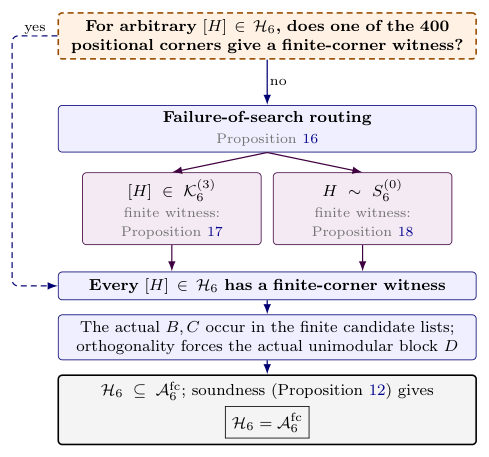
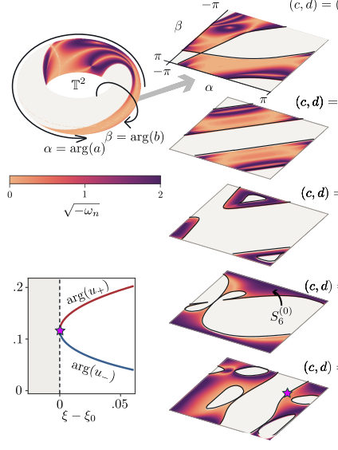
← Index · ← Previous · Next →
Authors: L. H. Ford, G. O. Heymans, N. F. Svaiter
Type: theory · Category: other · PDF: https://arxiv.org/pdf/2608.17230v1
Analysis basis: full PDF text, analyzed in chunks
Topic relevance: Keldysh / 2PI / non-Gaussian methods 2/5 · methods for driven-dissipative 2/5 · correlated / nonlocal dissipation 1/5 · driven-dissipative phase transition 1/5 · quantum measurements 1/5
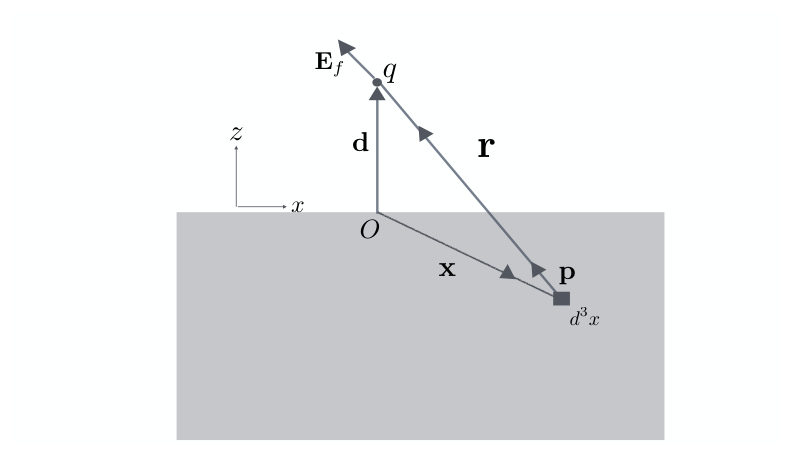
Summary. This theoretical paper calculates the motion of an electron near a dielectric surface caused by zero point density fluctuations in the material's phonon vacuum. The resulting quantum Brownian motion is found to be significant, potentially surpassing thermal or standard quantum limits. This suggests a measurable quantum noise source for nanoscale electronics and a method to sense vacuum fluctuations.
Why it may be interesting. This work connects vacuum fluctuations (a quantum field effect) to measurable transport phenomena (Brownian motion) at interfaces, suggesting a novel source of quantum noise in nanoscale devices.
Main problem. The paper investigates the quantum Brownian motion of a test charge (electron) induced by zero point density fluctuations within a dielectric material.
Main result. The calculated mean squared velocity due to these quantum fluctuations can be non-zero in both normal and transverse directions, potentially exceeding both thermal motion and standard quantum momentum uncertainty.
Method. The authors calculate the mean squared velocity by deriving the fluctuating electric field from density fluctuations and solving the resulting Langevin equation approach.
Model / system. The model involves a test charge placed near a dielectric interface whose local dielectric properties fluctuate due to zero point phonon vacuum fluctuations. The force on the charge is derived from these fluctuating dipole moments.
Key observables. Mean squared velocity components, $\langle (v_z^{zp})^2 angle$ and $\langle (v_x^{zp})^2 angle, \langle (v_y^{zp})^2 angle$.
Important parameters / regimes. Separation distance $d$, dielectric constant $\kappa$, and the magnitude of the density fluctuation $\hat{ ho}$.
Assumptions / limitations. The analysis assumes small fractional density fluctuations and treats the dielectric constant as static, ignoring dispersion and dissipation effects.
Figures summary. Figure 1 illustrates the physical setup: a test charge above a dielectric where local density fluctuations induce a fluctuating electric field, causing Brownian motion.
Paper structure. The argument progresses by defining the density fluctuation source ($\hat{ ho}$), calculating the resulting fluctuating field ($\mathbf{E}_f$), deriving the velocity correlation function, and finally solving the time integral to find the steady-state mean squared velocity.
The fluctuations in the phonon vacuum state can lead to zero point density fluctuations in a material, which in turn lead to local zero point fluctuations of the dielectric properties of the material. We argue that the density fluctuations lead to a fluctuating force on a test charge, such as an electron, located a short distance outside of the material. This force is due to fluctuating dipole moments inside the material, and produces Brownian motion of the electron. We calculate the mean squared velocity of the electron in both the normal and transverse direction relative to the boundary of the material. The result is nonzero in both directions, but larger in the normal case. We estimate the magnitude of this quantum Brownian motion and find that, in some cases, it can exceed the effects of both thermal motion and quantum momentum uncertainty. This suggests that the effect may be observable, and could constitute a source of quantum noise in nanoscale devices. It also potentially offers a means to remotely sense zero point density fluctuations in a material.
Authors: Jan C Olivier, Etienne Barnard
Type: theory · Category: other · PDF: https://arxiv.org/pdf/2608.17327v1
Analysis basis: full PDF text, analyzed in chunks
Topic relevance: Keldysh / 2PI / non-Gaussian methods 2/5 · analog quantum simulation 2/5 · methods for driven-dissipative 2/5
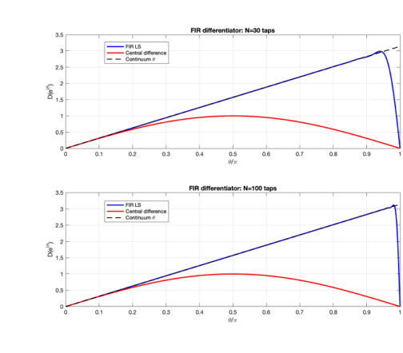
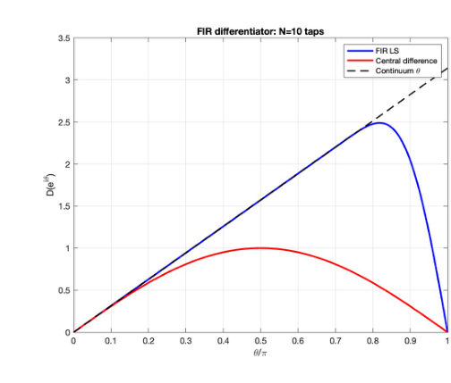
Summary. This paper develops a novel, finite-range approach to constructing momentum operators for lattice QFT using a Z-transform framework. By reinterpreting fermion doubling as an aliasing artifact, the authors derive a Finite Impulse Response (FIR) operator that maintains spectral accuracy without resorting to infinite-range terms. This provides a mathematically rigorous and computationally tractable alternative for simulating lattice field theories.
Why it may be interesting. While focused on QFT, the mathematical machinery—using spectral analysis (Z-transform) and constrained approximation to build local operators that mimic non-local continuum behavior—is highly relevant to developing effective Hamiltonians or lattice representations for complex quantum systems.
Main problem. The paper addresses the fundamental challenge of constructing lattice momentum operators for Quantum Field Theory (QFT) that are finite in range while accurately reproducing continuum physics and avoiding fermion doubling.
Main result. The authors propose a Finite Impulse Response (FIR) operator derived from a Z-transform framework, which achieves spectral accuracy with a strictly finite coupling range, unlike infinite-range approximations.
Method. The core method involves mapping lattice operators to functions on the unit circle (Z-transform) and solving a constrained least-squares approximation problem in the frequency domain to construct the FIR coefficients.
Model / system. The study is set in Lattice Quantum Field Theory, specifically analyzing the momentum representation of fermion fields ($\psi$) in the context of QED or general gauge theories.
Key observables. Dispersion relations, group velocities, and the presence/absence of unwanted zeros (aliasing) in the discrete momentum operator on the unit circle.
Important parameters / regimes. Lattice spacing ($a$), number of taps ($N$), and the momentum variable $ heta$ (angle on the unit circle).
Assumptions / limitations. The primary assumption is that the problem can be reformulated as a constrained approximation problem in the frequency domain, leading to the FIR structure. The gauge-covariant extension remains an open problem.
Figures summary. Figure 1 shows dispersion functions for FIR operators, illustrating spectral gaps for small N. Figure 2 shows the dispersion function for 10 taps.
Paper structure. The paper introduces the Z-transform framework, reformulates fermion doubling as an aliasing problem, derives the FIR operator via constrained approximation, and validates its spectral accuracy against continuum limits and existing lattice methods.
We propose a Z-transform framework for the analysis and synthesis of finite range lattice momentum operators in quantum field theory. In this formulation, translation-invariant lattice operators are represented as functions of the complex variable $z$ in the unit circle, allowing their spectral properties to be analyzed using tools from digital signal processing and rational approximation theory. Within this framework, the fermion doubling problem is reinterpreted as the appearance of unwanted zeros of the discrete momentum operator on the unit circle --- an aliasing phenomenon in the sense of the Nyquist sampling theorem --- and the conditions for ghost suppression are expressed as precise constraints on the zero structure of the operator's transfer function. It is proven that no rational function can satisfy all required conditions simultaneously, motivating the finite impulse response approach developed here. This reframing naturally suggests a class of finite-range momentum operators, constructed by solving a least-squares approximation problem in the frequency domain. The resulting finite impulse response (FIR) operator approximates the continuum derivative across the full Brillouin zone, with ghost suppression achieved through the accuracy of the spectral approximation rather than through the addition of a symmetry-breaking Wilson term or the infinite-range nonlocal SLAC derivative. Numerical investigation confirms that near $θ= π$ only plane waves propagate coherently, and these exhibit group velocities far exceeding the speed of light, further distinguishing them from physical low-energy excitations. No ghost wave packet solutions exist near $θ= π$.
Authors: Cheng-Jun Fang, Zong-Kuan Guo, Zhen-Hong Lyu, Jing Shu, Yu-Heng Sun, Zi-Zheng Zhou
Type: theory · Category: other · PDF: https://arxiv.org/pdf/2608.17015v1
Analysis basis: full PDF text, analyzed in chunks
Topic relevance: quantum measurements 2/5 · Keldysh / 2PI / non-Gaussian methods 1/5 · interference shaping light 1/5 · quantum optics experiment 1/5
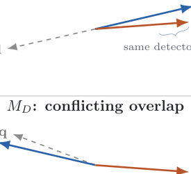
Summary. This theoretical work analyzes the observability of quantum squeezing in astrophysical gravitational waves at a distant detector. It finds that due to kinematic conflicts in same-cone measurements, the expected quantum signatures are severely suppressed, causing the signal to appear classically thermal. This demonstrates a crucial limitation: global quantum properties do not automatically translate into local, measurable quantum effects.
Why it may be interesting. The core mechanism of suppression—where geometric constraints (like single-line-of-sight detection) destroy quantum correlations—is a powerful concept applicable to any field where global quantum resources are mapped onto local measurements, such as quantum sensing or quantum communication.
Main problem. The paper investigates whether the global quantum squeezing of gravitons, generated by astrophysical sources, can manifest as measurable local quantum coherence at a far-field detector.
Main result. A severe kinematic conflict in same-cone measurements causes local quantum coherence to be highly suppressed, meaning global squeezing does not guarantee local observability; the signal appears effectively classical/thermal.
Method. The analysis employs spatial quantum optics methods, calculating two-time correlation functions ($g^{(2)}$) and analyzing the far-field expansion of the graviton field using pole extraction techniques.
Model / system. The system involves gravitons (gravitational waves) propagating from localized astrophysical sources to a far-field detector. The state is modeled as a multi-mode squeezed state, analyzed via an Effective Field Theory (EFT) Hamiltonian.
Key observables. Second-order correlation function ($g^{(2)}$), local quantum coherence, and the anomalous moment ($M_D$) relative to the normal moment ($N_D$).
Important parameters / regimes. The suppression factor $\eta \sim \exp(-dE/k^*)$, the far-field distance $r$, and the angular separation $\delta heta$.
Assumptions / limitations. The analysis assumes the far-field limit ($r \gg L_D$) and relies on the detector sampling only a single far-field line of sight (same-cone measurement).
Figures summary. Figures illustrate the far-field projection onto the outgoing branch ($I_+$) and compare overlap integrals for normal and anomalous moments, highlighting the kinematic conflict.
Paper structure. The paper progresses by first establishing the far-field expansion of the field (pole extraction), then calculating the relevant correlation functions ($g^{(2)}$) using overlap integrals, and finally demonstrating the exponential suppression factor arising from the same-cone measurement geometry.
While localized astrophysical sources can generate macroscopic graviton squeezing, their observable quantum signatures at far-field detectors remain unresolved. In this work, we investigate the propagation dynamics of the squeezed states using spatial quantum optics methods to evaluate correlation functions accessible to a local observer. Crucially, we reveal a severe kinematic conflict in same-cone measurements, which highly suppresses local quantum coherence. Consequently, these macroscopically squeezed states appear classically thermal to a single detector. Our results demonstrate that global squeezing does not guarantee local observability, and the measurable quantum signatures may be significantly weaker than what would be expected from the overall squeezing parameter of the state.
Authors: Kuo Hai, Junhao Huang, Qiong Chen, Wenhua Hai
Type: theory · Category: quantum information and computing · PDF: https://arxiv.org/pdf/2608.17280v1
Analysis basis: full PDF text, analyzed in chunks
Topic relevance: analog quantum simulation 2/5 · quantum measurements 2/5
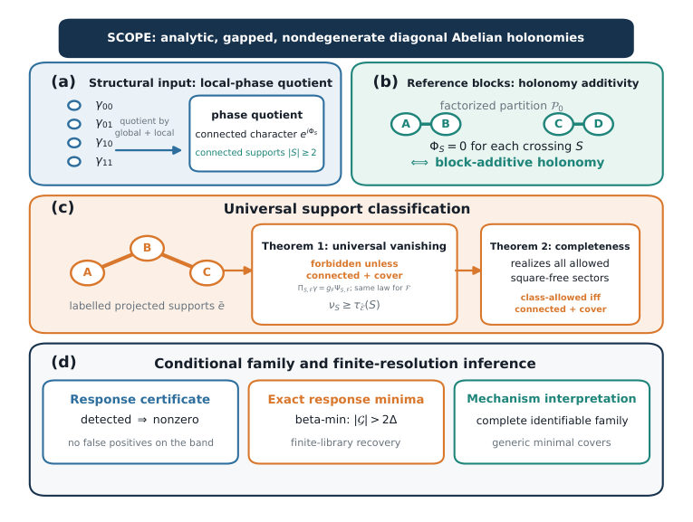
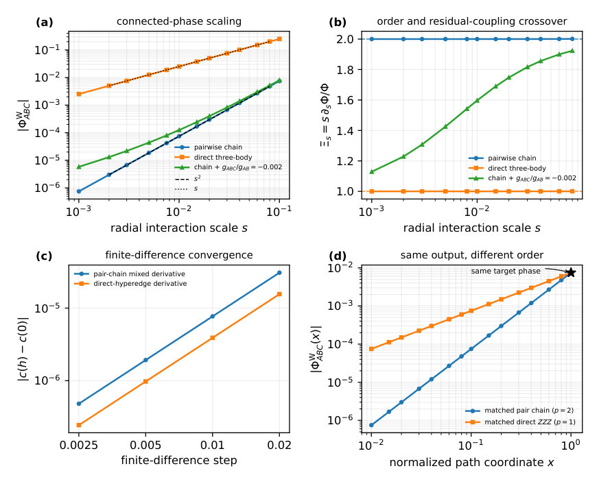
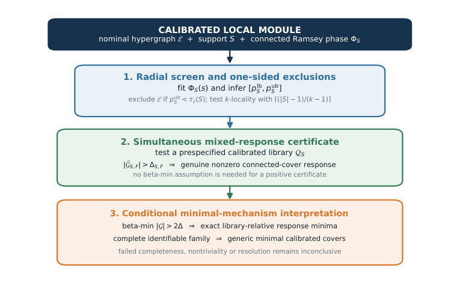
Summary. This theoretical work develops a 'connectivity-order law' to solve the problem of identifying the physical mechanism responsible for a measured many-body geometric phase. By employing advanced algebraic and combinatorial methods, the authors prove that the phase value constrains the underlying interactions to those that form a connected cover. This provides a powerful diagnostic tool for characterizing quantum system dynamics.
Why it may be interesting. This work provides rigorous mathematical tools to distinguish the physical origin of quantum phase accumulation, which is crucial for designing robust quantum gates and characterizing quantum hardware.
Main problem. The core problem is determining the generating mechanism (direct vs. connected sequence of lower-body interactions) of a measured many-body geometric phase ($\Phi_S$) from its value alone.
Main result. The paper establishes a 'connectivity-order law' stating that a nonzero connected response must involve an active set that connects and covers the target support, leading to the bound $ u_S \geq au_E(S)$.
Method. The authors use advanced mathematical tools including Möbius inversion on subset lattices, joint-support projectors, and developing a 'minimal-cover order law' to analyze the structure of Abelian holonomies.
Model / system. The analysis focuses on multiqubit systems exhibiting Abelian holonomies, derived from Hamiltonians structured with coupling terms, applicable to settings like two-spin NMR or semiconductor spin-qubits.
Key observables. The multiqubit geometric phase ($\Phi_S$), locally irreducible phase ($\Phi_S$), and confidence bands for detecting mixed responses.
Important parameters / regimes. The analysis is restricted to analytic, gapped, nondegenerate Abelian holonomies; the separation condition $|\Phi_S| > 2\Delta$ is key for identifying exact minima.
Assumptions / limitations. The results are derived under the assumption of analytic, gapped, and nondegenerate Abelian holonomies, and the method cannot resolve uncalibrated virtual paths.
Figures summary. Figure 1 summarizes the physical logic, showing irreducible phase extraction, additivity for factorized blocks, and joint logical–coupling resolution enforcing connected covers.
Paper structure. The paper builds from identifying the mechanism-identifiability problem, developing the connectivity-order law via joint support projectors, and concluding with necessary and sufficient conditions for minimal-cover response identification.
The value of a multiqubit geometric phase at a single operating point does not reveal whether it was generated directly or through a connected sequence of lower-body interactions. For analytic, gapped, nondegenerate Abelian holonomies, we jointly resolve logical support and independently calibrated coupling support. Every nonzero connected response must involve an active set that connects and covers the target and must contain one factor of each active coupling, yielding the sharp onset bound $ν_S \geq τ_E(S)$. The same selection law applies locally to projected Berry curvature. Conversely, an unrestricted finite-dimensional construction realizes all responses allowed by the connected-cover condition simultaneously, making the condition necessary and sufficient within this theorem class. Operationally, simultaneous confidence bands certify detected mixed responses while controlling false positives; a factor-of-two separation condition additionally recovers exact library-relative response minima. In a complete dictionary, nontriviality of every minimal-cover response is generically necessary and sufficient for these minima to coincide with the minimal calibrated mechanisms. Three-qubit Wilson calculations distinguish direct and pair-mediated routes with the same endpoint phase, and a synthetic Ramsey audit locates the finite-resolution boundary.
Authors: Chiara Marletto, Vlatko Vedral
Type: theory · Category: other · PDF: https://arxiv.org/pdf/2608.17688v1
Analysis basis: full PDF text, analyzed in chunks
Topic relevance: quantum measurements 2/5 · Keldysh / 2PI / non-Gaussian methods 1/5 · analog quantum simulation 1/5
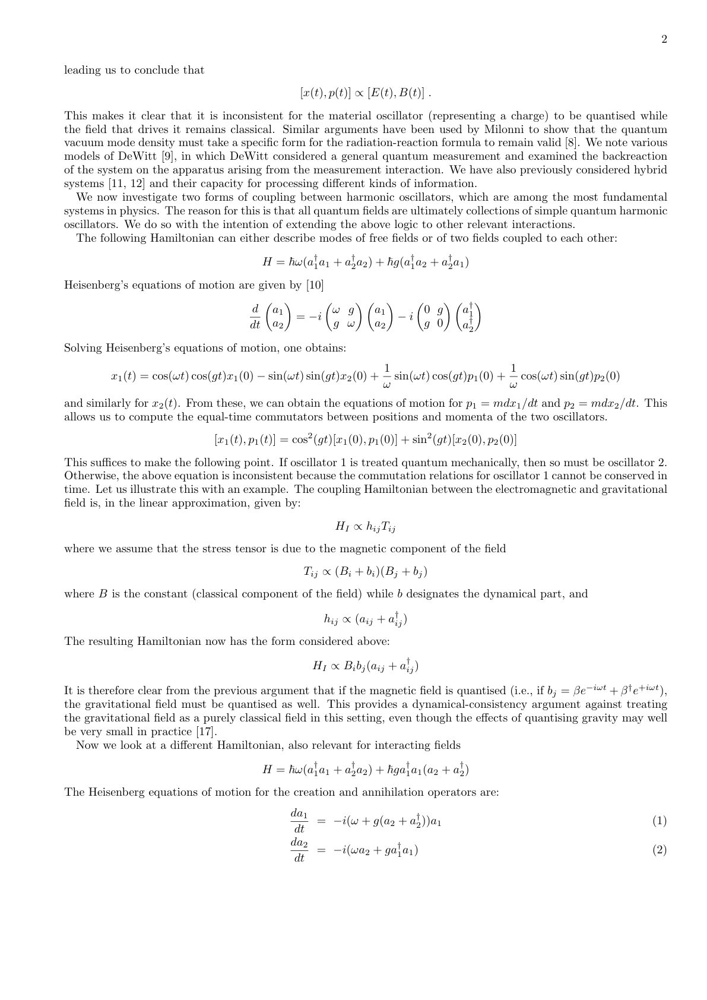
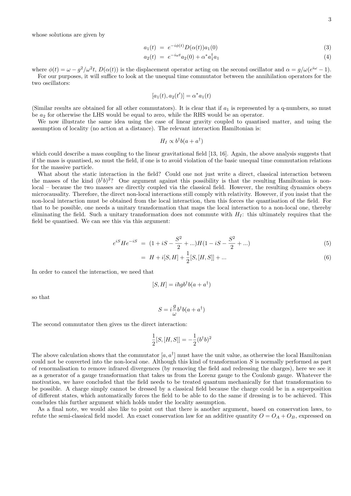
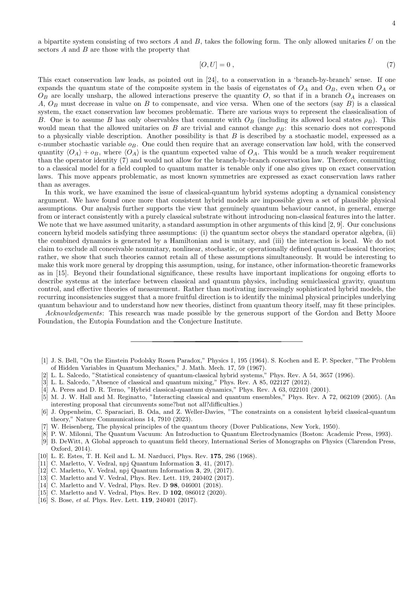
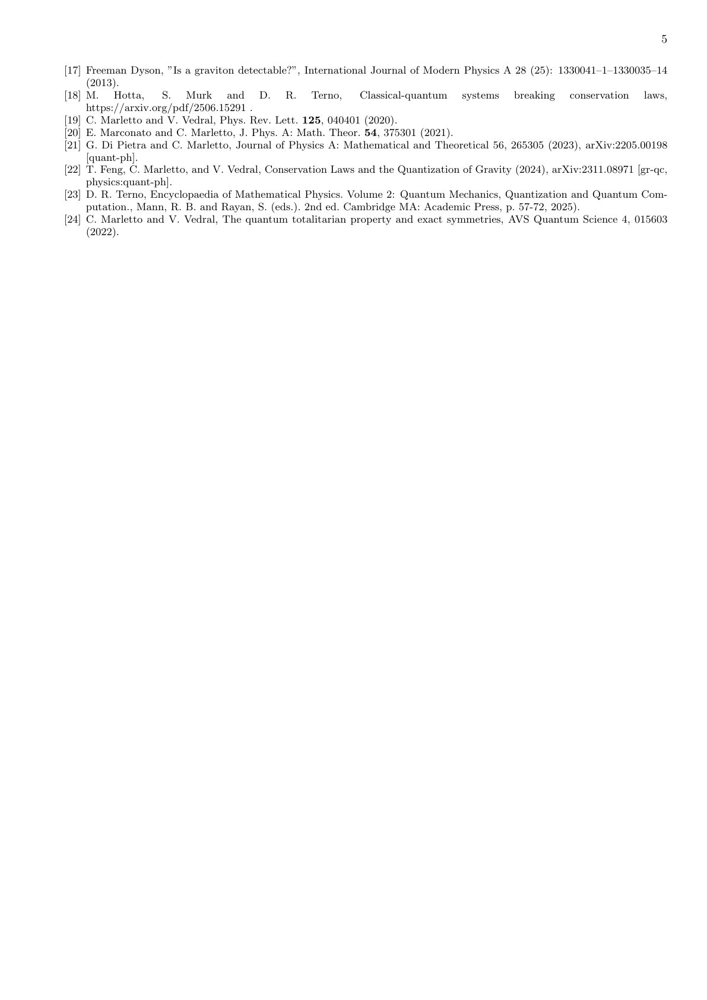
Summary. This work uses dynamical consistency to argue that quantum theory is universal by showing that any attempt to model quantum systems coupled to classical fields violates fundamental principles like exact conservation laws or canonical commutation relations. The authors demonstrate that for consistency, all coupled components must obey quantum rules, thereby ruling out viable hybrid quantum-classical models.
Why it may be interesting. It provides a fundamental, principle-based argument for the necessity of quantum mechanics, which is relevant for understanding the foundations of open quantum systems and quantum gravity.
Main problem. The paper argues for the universality of quantum theory by testing the consistency of hybrid quantum-classical models.
Main result. The authors demonstrate that maintaining exact conservation laws and canonical commutation relations forces any coupled system to be fully quantum, ruling out consistent hybrid classical-quantum descriptions.
Method. The analysis uses dynamical consistency arguments, examining the preservation of commutation relations and exact conservation laws under joint unitary time evolution.
Model / system. The models include coupled quantum harmonic oscillators, the linear coupling of gravity to quantized EM fields, and a general framework for bipartite quantum-classical systems.
Key observables. Commutation relations (e.g., $[x(t), p(t)]$), exact conservation laws ($[O, U] = 0$), and the preservation of the Heisenberg Uncertainty Principle.
Important parameters / regimes. The analysis focuses on the structure of the coupling Hamiltonian and the regimes where semiclassical approximations fail.
Assumptions / limitations. The core assumptions are that the combined dynamics must be Hamiltonian and unitary, and that the canonical algebra must be preserved under joint unitary dynamics.
Paper structure. The paper proceeds by analyzing simple quantum field couplings, extending the argument to gravity/EM coupling, and concluding with a detailed comparison to quantum measurement theory and the failure of classical approximations.
We argue for the universality of quantum theory using a dynamical consistency argument, within a specific Hamiltonian setting. We analyse two different types of coupling between simple quantum harmonic oscillators. Each illustrates an aspect of the free and interacting quantum fields and shows the inadequacy of semiclassical models. In particular, we establish that requiring the canonical algebra to be preserved under joint unitary dynamics rules out specific hybrid classical-quantum models. We apply our reasoning to the gravitational field in the linear regime, coupled to the quantised electromagnetic field and, separately, to quantised matter. We conclude with a comparison to DeWitt's analysis of quantum measurement, in which the apparatus, if classical, must be at least stochastic to preserve the Heisenberg Uncertainty Principle. We also note that stochastic models are inconsistent with the strict version of conservation principles, even if they comply with a probabilistic (on average) conservation.
Authors: Mateo Cárdenes Wuttig, Joseph Tindall
Type: theory · Category: quantum information and computing · PDF: https://arxiv.org/pdf/2608.18053v1
Analysis basis: full PDF text, analyzed in chunks
Topic relevance: quantum measurements 2/5


Summary. This paper provides a complete mathematical classification of complex Hadamard matrices of order six, which are crucial for quantum measurements and interferometry. The authors advance existing methods by proving that all such matrices can be systematically reconstructed from a small initial corner block. This resolves a long-standing open problem in the field by providing a rigorous, exhaustive algebraic framework.
Why it may be interesting. The rigorous classification of these matrices provides a deep mathematical toolset for designing optimal quantum measurement schemes and understanding the limits of quantum state tomography in multi-mode systems.
Main problem. The paper aims to provide a complete and exact finite-incidence classification of complex Hadamard matrices of order six ($d=6$).
Main result. The authors successfully classify all such matrices up to standard equivalence, proving that every class can be reconstructed from a suitable initial $3 imes 3$ corner via a finite, branch-complete procedure.
Method. The classification relies on refining Szöllősi's dilation method by proving that every matrix possesses a 'finite-corner witness' and solving the resulting constraints using algebraic elimination and solving coupled quadratic/cubic equations.
Model / system. The core model is the complex Hadamard matrix $H \in T^{6 imes 6}$, which encodes perfectly balanced unitary transformations and is fundamental to understanding mutually unbiased quantum measurements and multiphoton interferometry.
Key observables. The classification is determined by analyzing the structure of the matrix corners, the rank of the Gram matrix, and the existence of finite-corner witnesses.
Important parameters / regimes. The order of the matrix ($d=6$), the structure of the corner blocks, and the parameters defining the continuous families (e.g., Karlsson's family).
Assumptions / limitations. The classification relies on the assumption that the finite-corner witness approach covers all cases, and that the algebraic methods used for reconstruction are exhaustive.
Figures summary. Figure 1 illustrates the proof architecture, showing the flow from an arbitrary class to the conclusion that it must have a finite-corner witness, leading to the complete classification $ ext{H}6 = A^6$.}
Paper structure. The paper proceeds by defining the matrices and known families, introducing the 'branch-complete finite-dilation extension' of Szöllősi's algorithm, and finally studying the geometry of the reconstruction process using fixed-Gram constraints.
Complex Hadamard matrices encode perfectly balanced unitary transformations. They underlie mutually unbiased quantum measurements and multiphoton interferometry. Their classification is complete through order five, but order six -- the first dimension in which several continuous families coexist with an isolated solution -- has remained open for decades. Here, we give a complete and exact finite-incidence classification of order-six complex Hadamard matrices up to standard equivalence. We first prove that every such matrix can be constructed from an initial dephased $3 \times 3$ corner by a finite, branch-complete procedure. This supplies the global step missing from Szöllősi's dilation method and proves his conjecture: up to standard equivalence, every class outside Karlsson's three-parameter family and Tao's isolated matrix is recovered algebraically from a suitable corner. We then describe the geometry of the reconstruction from four initial phases and show that, except for Tao's isolated matrix and a single explicit Karlsson matrix, every class admits a representative obtained by solving one quadratic and one cubic equation in both the horizontal and vertical directions. Our work resolves the classification problem and provides a rigorous framework for further investigating order-six Hadamards, with applications to balanced six-mode interferometers and the study of mutually unbiased bases.
Authors: Luke K. Davis, Alexander R. Klotz
Type: theory · Category: statistical mechanics · PDF: https://arxiv.org/pdf/2608.17850v1
Analysis basis: full PDF text, analyzed in chunks
Topic relevance: analog quantum simulation 2/5
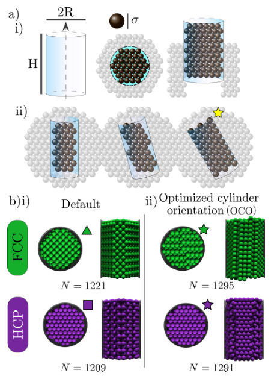
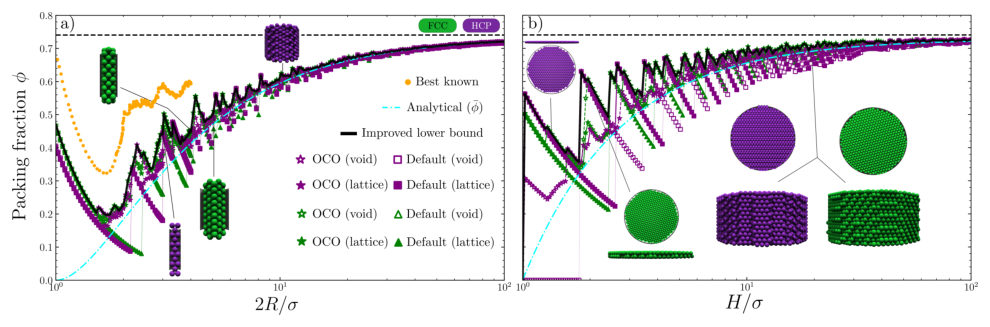
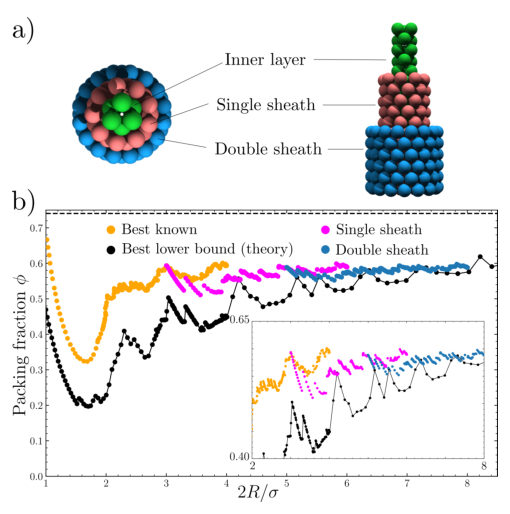
Summary. This paper provides a comprehensive analytical theory for determining the maximum packing fraction of hard spheres inside a cylinder. It establishes a rigorous lower bound using lattice masking and improves this bound through systematic optimization and the addition of 'sheaths.' The work is significant for providing a general theoretical framework applicable across all cylinder sizes.
Why it may be interesting. While focused on classical geometry, the rigorous development of analytical bounds and optimization procedures for confined systems mirrors techniques used in analyzing quantum confinement effects or calculating ground state energies in geometrically constrained quantum systems.
Main problem. The paper develops an analytical theory to calculate the dense packing fraction of hard spheres (balls) confined within a cylinder, covering all aspect ratios.
Main result. The authors derive an exact analytical lower bound for the packing fraction using a lattice-masking approach, and further improve this bound using an Optimized Cylinder Orientation (OCO) procedure and a 'sheathing' construction.
Method. The methods involve deriving the packing fraction using Fourier transforms of the cylindrical indicator function, optimizing the cylinder orientation via gradient conditions, and geometrically constructing successive annular sheaths.
Model / system. The system is monodisperse hard spheres packed inside a cylinder of specified diameter and height. The theory models the packing by assuming the spheres adhere to a perfect crystal lattice (FCC or HCP).
Key observables. Packing fraction ($\phi$), which exhibits oscillatory (step-like) behavior as a function of cylinder dimensions.
Important parameters / regimes. Cylinder diameter ($2R$), cylinder height ($H$), and sphere diameter ($\sigma$). The analysis covers regimes from narrow to wide cylinders.
Assumptions / limitations. The primary assumption is that the packing can be modeled by masking a finite volume from a perfect, regular crystal lattice. Later derivations assume $H \gg R_0$ for sheath calculations.
Figures summary. Figures illustrate the masking process, compare predicted packing fractions (lower bound vs. numerical data) across varying dimensions, and detail the geometric construction of added annular sheaths.
Paper structure. The paper progresses from establishing the basic lattice-based lower bound via Fourier analysis to introducing optimization techniques (OCO) to tighten this bound, and finally detailing a recursive 'sheathing' construction to further improve the predicted density.
We develop an analytical theory for the dense packing of hard spheres in cylinders. Physically, our theory consists of a finite cylindrical masking of a close-packed three-dimensional solid and covers the entire range of cylinder aspect ratios, thus going beyond efforts that are focused on very tall cylinders in a narrow range of widths. We explicitly derive an exact equation for resulting packing fractions, valid for any regular lattice, and it provides a basis to understand the oscillations and scaling of volume fractions that have appeared in previous works. Our analytical relation serves as a rigorous lower bound and to tighten it we derive, and implement, an efficient mathematical procedure to optimize the orientation of the cylinder. Furthermore, we suggest simple techniques to improve on the predicted packings. Overall, we provide a general theoretical foundation for the packing of balls in cylinders, valid for all container sizes.
Authors: Felix J. Rutzinger
Type: theory · Category: other · PDF: https://arxiv.org/pdf/2608.18010v1
Analysis basis: full PDF text, analyzed in chunks
Topic relevance: quantum measurements 2/5
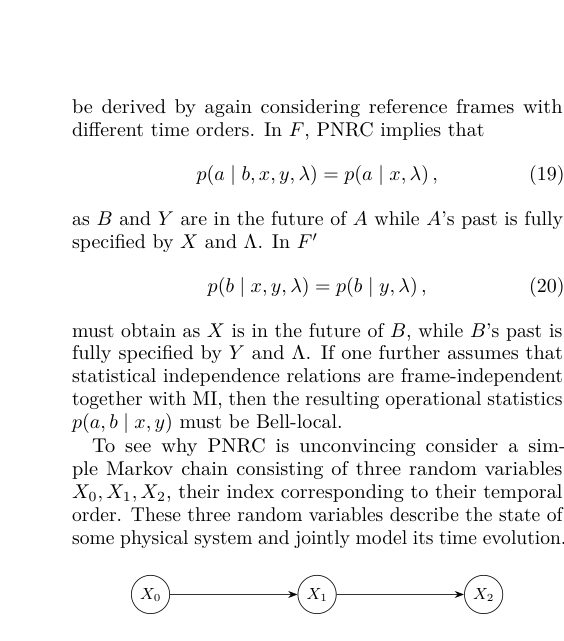

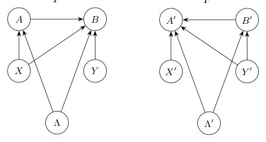
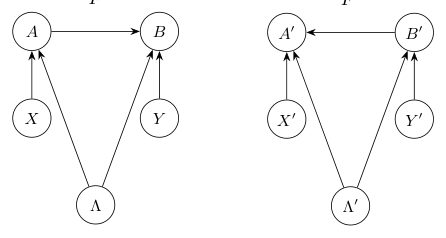

Summary. This paper extends Gisin's argument by developing frame-indexed causal models to handle the probabilistic nature of quantum correlations. It proves that no model satisfying key principles like Independent Settings and No-Retrocausality can be Lorentz covariant while reproducing Bell test statistics. The work thus places strong theoretical constraints on any relativistic causal interpretation of quantum theory.
Why it may be interesting. While not directly about AMO systems, the rigorous development of causal inference frameworks and their incompatibility with quantum correlations provides deep theoretical constraints on any physical theory attempting to explain quantum mechanics.
Main problem. The paper addresses the conflict between quantum nonlocality (implied by Bell correlations) and the principles of special relativity when constructing causal explanations for quantum mechanics.
Main result. The authors establish two no-go theorems showing that no empirically adequate frame-indexed causal model can simultaneously satisfy Independent Settings, No-Retrocausality, and Causal Lorentz Invariance.
Method. The methodology involves extending Gisin's original deterministic argument to the probabilistic domain using a novel framework of frame-indexed causal models.
Model / system. The system under study is the bipartite Bell experiment, analyzed using hidden variable models parameterized by causal structures associated with different inertial reference frames.
Key observables. Bell correlations (e.g., CHSH inequality violation), and the agreement of operational variables across different reference frames (runwise agreement).
Important parameters / regimes. The assumptions include Independent Settings, No-Retrocausality, and the degree of Lorentz invariance assumed for the causal structure.
Assumptions / limitations. The analysis critically examines the assumptions required for Gisin's argument, particularly the assumption of determinism, and introduces the Independent Explanation principle.
Figures summary. Figure 1 illustrates a simple Markov chain used to critique probabilistic notions of no-retrocausality. Figure 7 illustrates the maximally allowed causal structure compatible with Independent Settings and No-Retrocausality in two frames.
Paper structure. The paper first critiques the limitations of generalizing Gisin's deterministic argument to the probabilistic case. It then introduces frame-indexed causal models to formalize the constraints, leading to the derivation of the two main no-go results based on invariance principles.
Gisin has provided an argument for the conclusion that no covariant nonlocal model can reproduce the operational statistics observed in Bell experiments. Gisin's argument applies only to deterministic models and we argue that proposed generalizations of the argument beyond determinism based solely on statistical notions are unconvincing, as they lack the resources to formulate a satisfactory notion of no-retrocausality. We introduce the framework of frame-indexed causal models in order to extend Gisin's argument to the genuinely probabilistic case. Frame-indexed causal models associate potentially different causal models with different reference frames while requiring corresponding operational variables to agree runwise. Within this framework, we establish two no-go results based on Gisin's argument. First, we show that no empirically adequate frame-indexed causal model can jointly satisfy Independent Settings, No-Retrocausality, and Causal Lorentz Invariance. Second, it is established that this result continues to hold when Causal Lorentz Invariance is weakened to Lorentz Invariance of Causal Connections, which requires only the skeleton of the causal structure to remain invariant, thereby allowing the direction of causal influence to depend on the choice of reference frame. These results are discussed in the context of relativistic interpretations of quantum theory and nonclassical causal inference.
Authors: Vincenzo Fiorentino, Kuntal Sengupta
Type: theory · Category: other · PDF: https://arxiv.org/pdf/2608.17572v1
Analysis basis: full PDF text, analyzed in chunks
Topic relevance: quantum measurements 2/5
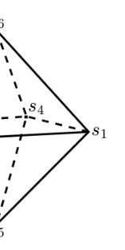
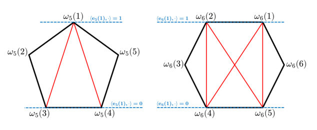
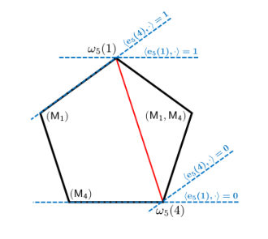
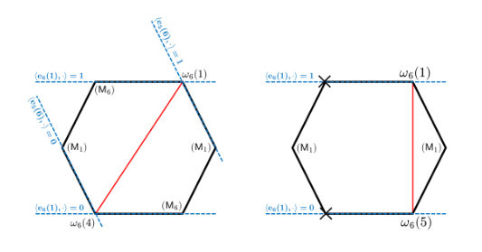
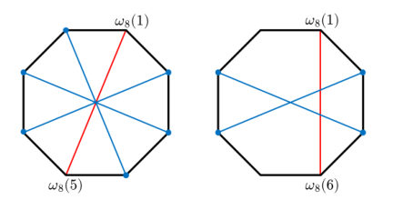
Summary. This paper redefines quantum superposition operationally within Generalized Probabilistic Theories (GPTs), removing reliance on Hilbert space formalism. By testing three structural superposition principles, the authors demonstrate that the quantum tensor product is the largest composition rule consistent with these principles. This work provides deep insights into the necessary structural axioms underlying quantum theory.
Why it may be interesting. This work provides a fundamental, axiomatic investigation into the core concept of superposition, which is crucial for understanding the boundaries between quantum mechanics and other physical theories, impacting foundational quantum information theory.
Main problem. The paper aims to develop a theory-independent, operational definition of quantum superposition, moving beyond the reliance on the Hilbert space formalism, and to determine which structural features of quantum theory are necessary for this concept.
Main result. The quantum tensor product emerges as the largest composition rule for quantum systems that respects all three formulated superposition principles. Furthermore, the authors show that no extension of the quantum tensor product admits a universal superposition principle.
Method. The authors define superposition operationally within the framework of Generalised Probabilistic Theories (GPTs) using prepare-and-measure statistics, and test this definition using three structural superposition principles (complete, uniform, and mutual).
Model / system. The analysis uses Generalised Probabilistic Theories (GPTs) to model various physical systems, including quantum theory, classical theory, and abstract 'g-systems.' Composite systems are analyzed using tensor product structures for state and effect spaces.
Key observables. Superposition itself (defined relationally in GPTs), preparational uncertainty, and entanglement are shown to be special forms of superposition.
Important parameters / regimes. The structure of the underlying GPT, the set of extremal states (MPD set), and the specific superposition principles (Complete, Uniform, Mutual).
Assumptions / limitations. The analysis assumes that the set of MDE measurements is informationally complete for the system under study.
Figures summary. Not specified.
Paper structure. The paper first introduces the operational definition of superposition in GPTs, then formulates and tests the three superposition principles (Complete, Uniform, Mutual) across various GPTs. It then analyzes the composition rules for these principles, culminating in the proof that the quantum tensor product is the maximal structure satisfying these principles.
Textbook quantum superposition refers to the feature that certain linear combinations of Hilbert space rays, each representing a valid quantum state, are themselves valid states. This notion is not operational, and it relies on the underlying Hilbert space formalism. Recent proposals for experimental tests of indefinite causal order, as well as tests probing the non-classicality of gravity, pivot on superposition, thereby calling for a theory-independent, operational formalisation of the concept. Here, we define superposition within the framework of Generalised Probabilistic Theories, based on observed statistics in prepare-and-measure experiments. Using this, we formulate three superposition principles to investigate which structural features of quantum theory carry over to other theories. We study conditions under which these principles carry over from subsystems to their compositions; to this end, we show that the quantum tensor product emerges as the largest composition rule for quantum systems respecting all three principles. Furthermore, we show how non-classical features such as entanglement and preparational uncertainty can be viewed as special forms of superposition.
Authors: Andrew C. Yuan, Nouédyn Baspin
Type: theory · Category: quantum information and computing · PDF: https://arxiv.org/pdf/2608.16995v1
Analysis basis: full PDF text, analyzed in chunks
Topic relevance: quantum measurements 2/5
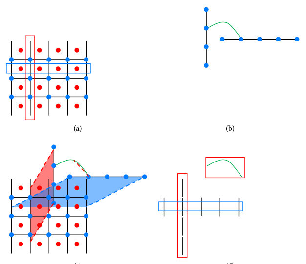
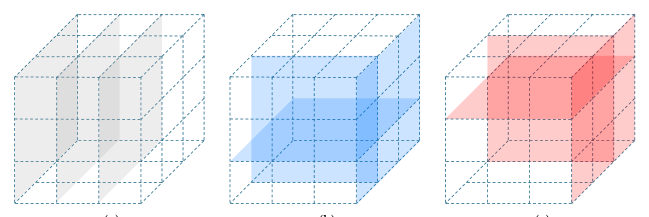
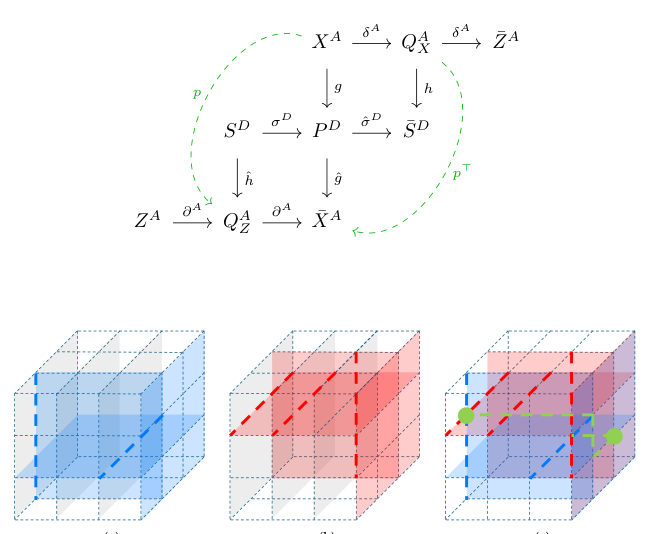
Summary. This paper generalizes the mathematical framework for quantum error correction from restricted CSS codes to arbitrary non-CSS stabilizer codes. By employing symplectic complexes, the authors show that crucial techniques like logical measurement and code embedding can be extended to these more general, physically relevant codes. This significantly broadens the theoretical toolkit for designing fault-tolerant quantum computation.
Why it may be interesting. This work provides a powerful, unified mathematical language (symplectic geometry) to analyze quantum error correction beyond the well-understood CSS regime, which is crucial for realizing complex quantum hardware.
Main problem. The paper generalizes the framework for quantum code embedding from being restricted to Calderbank–Shor–Steane (CSS) codes to accommodate arbitrary stabilizer codes (non-CSS).
Main result. A generalized algebraic framework, utilizing symplectic complexes, successfully extends constructions like logical measurement, quantum weight reduction, and Euclidean embedding to non-CSS codes in a straightforward manner.
Method. The authors develop and apply a generalized algebraic framework based on symplectic complexes and the analysis of the height-2 cone to unify various quantum error correction procedures.
Model / system. The study focuses on quantum error correcting codes, specifically stabilizer codes, encompassing both CSS and general non-CSS types (e.g., those involving Y-type logical measurements).
Key observables. Logical measurement outcomes (X-type vs. Y-type), quantum weight reduction metrics, and the structure of the symplectic embedding.
Important parameters / regimes. The number of qubits ($n$), the maximum check weight ($w$), and the structure of the underlying symplectic forms over F2.
Assumptions / limitations. Previous work was limited to CSS codes; the generalization relies on the properties of the height-2 cone within the symplectic setting.
Figures summary. Table I compares CSS-only restrictions versus non-CSS generalizations across key diagnostics. Table II compares specific constructions like Layer Codes for CSS vs. Non-CSS cases.
Paper structure. The paper builds from establishing the limitations of CSS-only methods to introducing the generalized symplectic framework (Theorem 2), and finally detailing complex procedures for non-CSS logical measurement and fast surgery (Algorithms 10 & 11).
We generalize the unified framework in [Phys. Rev. A 113, 022438 (2026)] to accommodate arbitrary stabilizer codes (referred as non-CSS for emphasis). The generalization has immediate consequences in areas including logical measurement, quantum weight reduction and Euclidean embedding. For example, currently CSS (pure $X,Z$-type) logical measurements are well-understood based on the (height-1) cone, while non-CSS (e.g., $Y$-type) logical measurements are ad hoc (e.g., rely on local Clifford transform). Similarly, quantum weight reduction and optimal Euclidean embeddings only exist for CSS input codes. Here, we show that our generalized framework addresses this issue, and thus many constructions, including qLDPC surgery, Layer Codes and quantum weight reduction generalize to non-CSS codes in a relatively straightforward fashion. The previously mentioned examples are derived in detail for clarity.
Authors: Chenhao Zhao, Yinan Li, Dong An
Type: theory · Category: quantum information and computing · PDF: https://arxiv.org/pdf/2608.17653v1
Analysis basis: full PDF text, analyzed in chunks
Topic relevance: analog quantum simulation 2/5
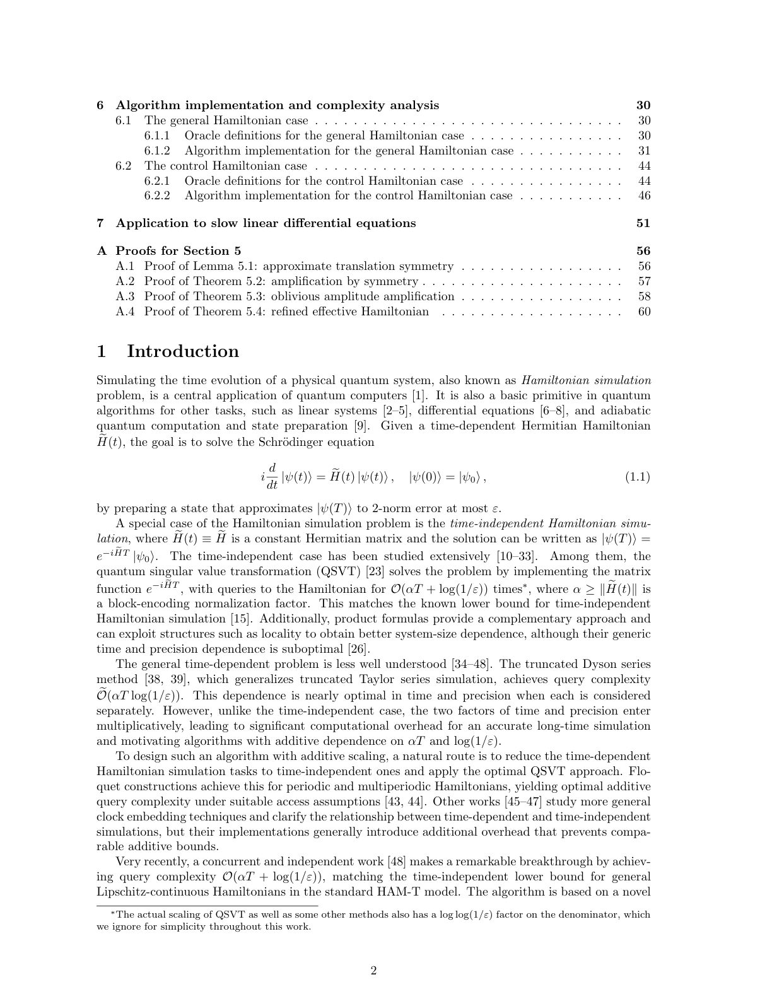
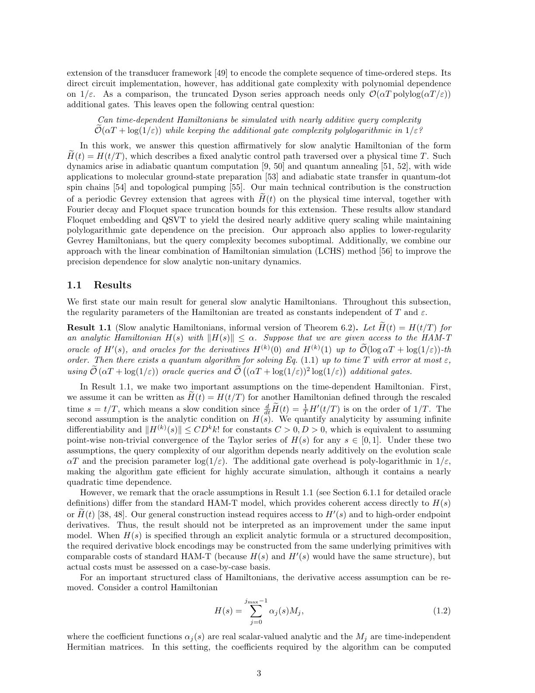
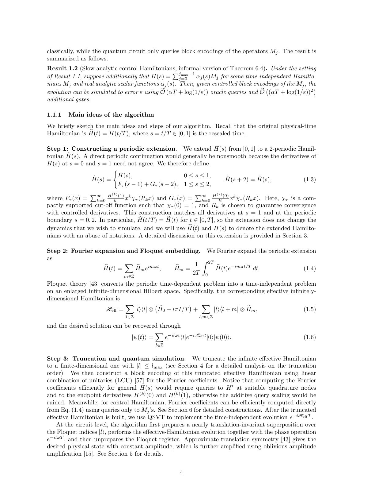
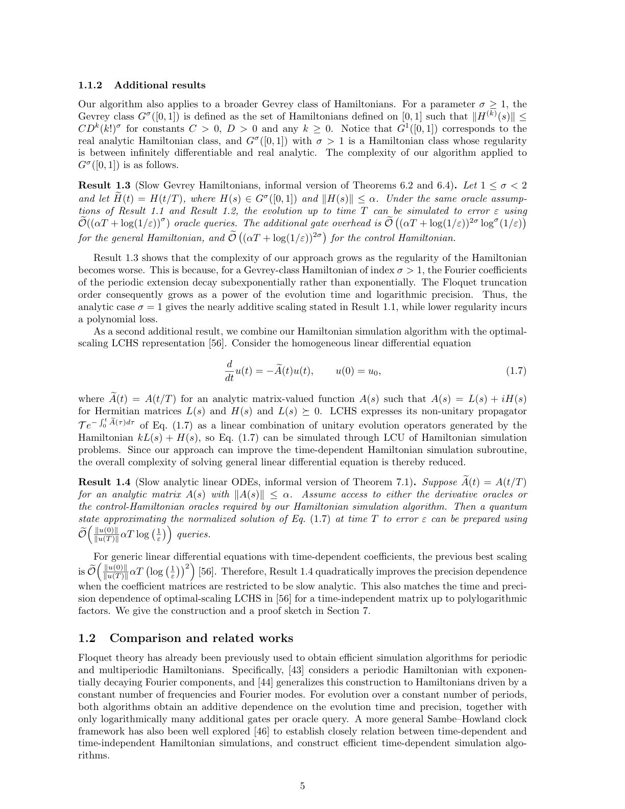
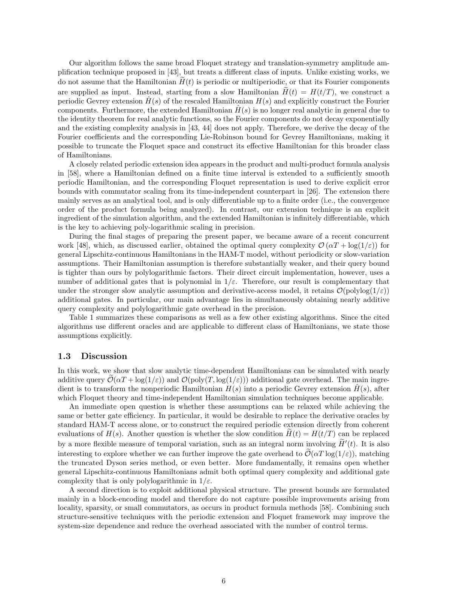
Summary. This paper presents a quantum algorithm to efficiently simulate time evolution under slow analytic time-dependent Hamiltonians. By employing periodic Gevrey extensions and combining them with Floquet embedding, the authors achieve near-additive query complexity. This advances the field by providing scalable simulation tools for complex quantum dynamics.
Why it may be interesting. This work provides concrete, efficient quantum algorithmic tools for simulating complex, time-varying quantum dynamics, which is crucial for modeling open quantum systems and time-dependent interactions in AMO physics.
Main problem. The paper addresses the quantum simulation of time evolution governed by slow analytic time-dependent Hamiltonians, $e^{H(t)} = H(t/T)$. It aims to achieve high efficiency in terms of query and gate complexity.
Main result. The developed algorithm achieves a near-additive query complexity of $\widetilde{\mathcal O}(\alpha T + \log(1/\epsilon))$ for slow analytic Hamiltonians, with polylogarithmic gate overhead.
Method. The core method involves constructing a periodic Gevrey extension of the Hamiltonian, followed by Floquet embedding and utilizing optimal time-independent Hamiltonian simulation techniques like QSVT.
Model / system. The model is a quantum system whose time evolution is governed by a time-dependent Hamiltonian $H(t)$, which is assumed to be slow analytic. The simulation is generalized to include structured control Hamiltonians and Gevrey class Hamiltonians.
Key observables. Query complexity, gate complexity, and the resulting state approximation error ($\epsilon$).
Important parameters / regimes. $\alpha$ (related to $\lVert H(s) Vert$), $T$ (total time), and $\epsilon$ (desired error).
Assumptions / limitations. The primary assumption is that the Hamiltonian $H(s)$ is slow analytic, allowing for the construction of a smooth periodic extension. The general case requires access to endpoint derivatives of $H(s)$.
Paper structure. The paper develops the simulation framework by first establishing the periodic extension and Fourier expansion, then mapping the problem to an effective time-independent Hamiltonian, and finally applying advanced quantum simulation techniques (like LCU/QSVT) to derive the complexity bounds.
We develop a quantum algorithm for slow analytic Hamiltonians $\widetilde H(t)=H(t/T)$ with $\|H(s)\|\leqα$ that achieves nearly additive query complexity and low gate overhead. Our main technical contribution is a periodic Gevrey extension of $H(s)$, together with Fourier component decay and truncation bounds that enable an efficient finite-dimensional simulation. Combined with Floquet embedding and optimal time-independent Hamiltonian simulation technique, this gives query complexity $\widetilde{\mathcal O}\!\left(αT+\log(1/\varepsilon)\right)$ and additional gate complexity $\widetilde{\mathcal O}\!\left((αT+\log(1/\varepsilon))^2\log(1/\varepsilon)\right)$, assuming coherent access to $H'(s)$ and endpoint derivatives. For slow analytic control Hamiltonians, only block encodings of the time-independent control operators are required, with the same query complexity and lower gate overhead. Our method also extends to Gevrey Hamiltonians and improves the precision dependence for simulating slow analytic semi-dissipative linear differential equations.
Authors: Krishna Prasad Maity, Mohd Uvais, Jean-Francois Dayen, Bernard Doudin, Roman Gumeniuk, Bohdan Kundys
Type: experiment · Category: other · PDF: https://arxiv.org/pdf/2608.17647v1
Analysis basis: full PDF text, analyzed in chunks
Topic relevance: quantum measurements 2/5
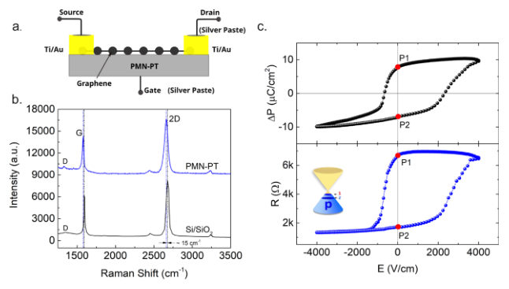
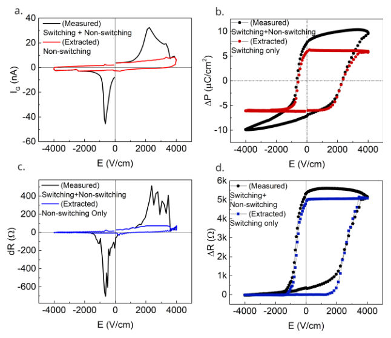
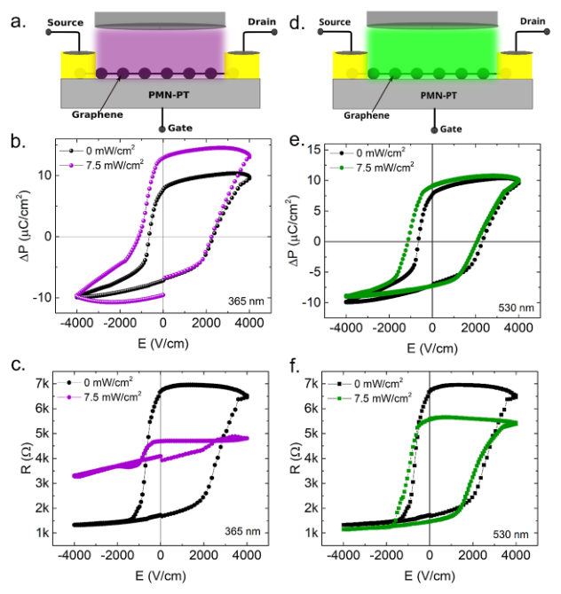
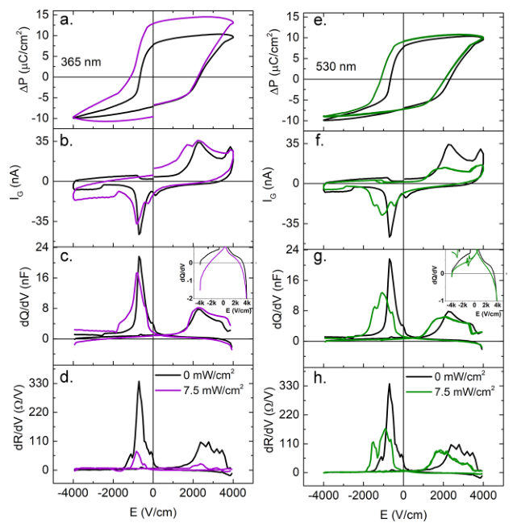
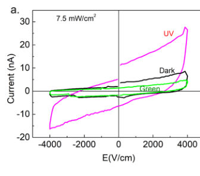
Summary. This research characterizes how light controls the electrostatics of ferroelectric/graphene devices. By comparing UV and green light illumination, the authors distinguish between free-carrier-induced screening and defect-mediated charge redistribution. This provides practical guidelines for using light to either tune doping or deliberately reconfigure the ferroelectric polarization state.
Why it may be interesting. The work demonstrates how external light fields can be used to precisely control the polarization state and doping level in ferroelectric interfaces, offering a mechanism for optically writing ferroelectric memory states.
Main problem. The study investigates the optoelectronic response of ferroelectric/graphene devices to disentangle the effects of ferroelectric dipole switching from extrinsic current pathways under illumination.
Main result. Above-band gap UV illumination causes dynamic photovoltaic charge screening, significantly suppressing the graphene resistance ratio, whereas sub-band gap green light causes only weak, defect-mediated charge redistribution.
Method. The authors performed I-V measurements and analyzed ferroelectric hysteresis loops under dark, UV (365 nm), and green (530 nm) illumination, employing compensation techniques for leakage and stray capacitance.
Model / system. The physical system is a ferroelectric material (e.g., PMN-PT) interfaced with a graphene overlayer. The analysis focuses on the interplay between polarization switching, photovoltaic charge screening, and defect-assisted doping.
Key observables. Graphene resistance variation ($\Delta R$), ferroelectric hysteresis loop shape, photovoltaic current, and the ratio of resistance between opposite remanent polarization states.
Important parameters / regimes. Illumination wavelength (365 nm vs 530 nm), free carrier generation (above-band gap), and charge screening magnitude (e.g., $290\%$ down to $15\%$).
Assumptions / limitations. The analysis requires compensating for background leakage current and stray capacitance to accurately isolate intrinsic ferroelectric switching and photovoltaic effects.
Figures summary. Figures compare FE loops and graphene resistance variations under UV vs. green light; supporting figures detail the subtraction of leakage/capacitance and quantify the PV current difference.
Paper structure. The paper systematically analyzes the device response by first establishing baseline measurements (dark), then comparing the strong photoresponse induced by UV light (free carriers/screening) against the weaker, gradual response from green light (defect excitation), while rigorously compensating for parasitic electrical effects.
Ferroelectrics enable large charge doping of two-dimensional overlayers, but the coexistence of switching and nonswitching charge dynamics complicate electro-optical analysis. Here, we investigate the optoelectronic response of a ferroelectric/graphene device under 365 and 530 nm illumination, disentangling effects on ferroelectric dipole alignment from extrinsic current pathways. Graphene acts as a high-gain sensor, amplifying subtle polarization dynamics into a pronounced resistance difference. By resolving switching and nonswitching channels in dark and illuminated conditions, we reveal a competition between photovoltaic charge screening and defect-assisted excitation that governs device electrostatics. Above-band gap illumination generates free carriers that induce leaky ferroelectric hysteresis and suppress the graphene resistance ratio between opposite remanent polarization states from 290% to 15% due to dynamic photovoltaic charge screening. In contrast, 530 nm illumination primarily induces charge redistribution in ferroelectrics via defect-state excitation, leading to a significantly weaker suppression of the resistance variation of graphene. These results establish practical guidelines for selecting photon energy and intensity to either preserve remanent polarization while tuning channel doping or deliberately reconfigure polarization through optical programming.
Authors: Xinyi Li, Yifeng Peng, Ying Wang
Type: theory · Category: quantum information and computing · PDF: https://arxiv.org/pdf/2608.17913v1
Analysis basis: full PDF text, analyzed in chunks
Topic relevance: QC/QI experiment 2/5
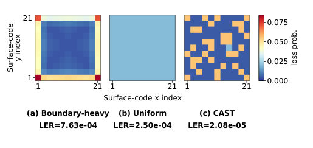
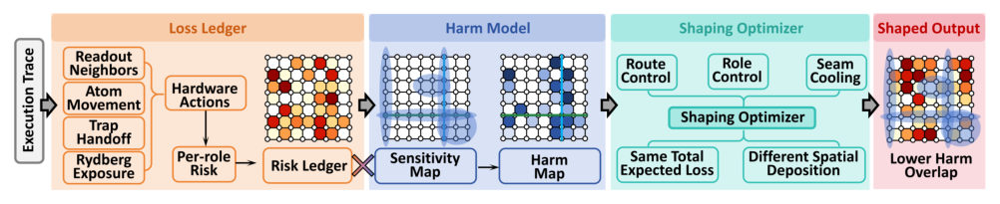
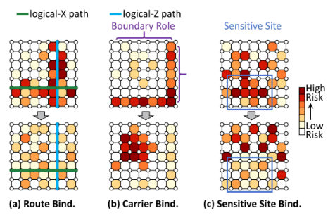
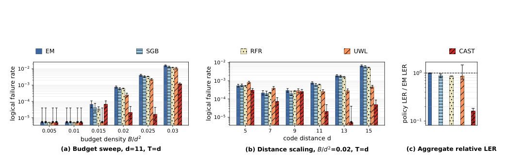
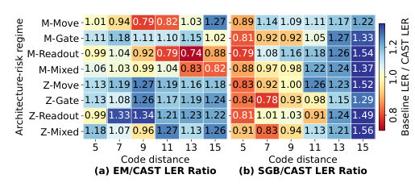
Summary. This paper introduces CAST, a novel compiler optimization pass for neutral-atom quantum error correction that accounts for where atom loss occurs, not just how much. By minimizing a decoder-weighted harm objective, CAST strategically redirects unavoidable hardware losses away from the most critical parts of the quantum code. This results in substantial reductions in the logical error rate, proving that deposition awareness is crucial for scalable quantum computing.
Why it may be interesting. It provides a concrete, actionable compiler-level optimization technique for mitigating hardware imperfections (loss) in emerging quantum platforms, directly impacting the feasibility of large-scale quantum computation.
Main problem. In neutral-atom QEC, simply minimizing total atom loss exposure is insufficient because the location (deposition) of the loss significantly impacts the final logical error rate (LER).
Main result. The proposed compiler pass, CAST, significantly lowers LER compared to topology-blind methods by intelligently steering loss deposition away from highly sensitive code regions.
Method. CAST is a compiler-side optimization pass that minimizes a decoder-weighted harm objective by searching for local, trace-valid actions (route, role, seam cooling) while maintaining a comparable total physical exposure.
Model / system. The work focuses on quantum error correction (QEC) implemented on neutral-atom arrays, specifically modeling surface-code memory patches and lattice-surgery operations.
Key observables. Logical Error Rate (LER), Decoder-Weighted Harm, Total Atom Loss Exposure.
Important parameters / regimes. Code distance ($d$), physical-scale architecture models, and the degree of risk heterogeneity/routing slack.
Assumptions / limitations. The optimization assumes the compiler can find local, trace-valid actions that change deposition patterns while keeping total physical exposure constant.
Figures summary. Figures compare LER reductions across different loss deposition patterns (e.g., Boundary-heavy vs. CAST) and show quantitative improvements across various physical-scale settings, highlighting the benefit of CAST.
Paper structure. The paper introduces the limitation of scalar loss metrics, formalizes the decoder-aware risk deposition objective, presents the CAST optimization pass, and validates its performance against multiple baselines across various physical-scale benchmarks.
Neutral-atom arrays are emerging as a leading platform for scalable quantum error correction (QEC). Qubits are routed and reused across the array, while detected loss is reported to the decoder as erasure information. Existing neutral-atom compilers optimize this movement, including routing, shuttling, and reuse, and often model loss through scalar exposure costs. Yet total exposure is an incomplete statistic for erasure-corrected QEC. It captures how much loss occurs, but not where it lands on the code, which we call its deposition. Under the same expected atom-loss budget, different deposition patterns over a code patch induce substantially different logical error rates (LER). We formalize this as decoder-aware risk deposition and present CAST, a compiler-side optimization pass that overlays a code-topology sensitivity map on a role-indexed exposure ledger and minimizes a decoder-weighted harm objective under a comparable-exposure constraint, using only local route, role, and seam-cooling actions. Across surface-code memory, physical-scale architecture models, lattice surgery, and decoder-mismatch checks, CAST lowers LER relative to topology-blind exposure minimization, improving on it in 35 of 48 physical-scale settings and by as much as 5.3x where exposure is heterogeneous and routing has slack. The largest gains occur when high exposure and high decoder sensitivity are initially misaligned, giving CAST room to redirect risk toward lower-impact code roles. CAST shows that decoder-aware atom-loss risk deposition can be optimized as a compiler-side pass in neutral-atom QEC.
Authors: Toru Fujii
Type: theory · Category: quantum information and computing · PDF: https://arxiv.org/pdf/2608.17249v1
Analysis basis: full PDF text, analyzed in chunks
Topic relevance: Keldysh / 2PI / non-Gaussian methods 1/5 · analog quantum simulation 1/5 · correlated / nonlocal dissipation 1/5 · driven-dissipative phase transition 1/5 · methods for driven-dissipative 1/5 · quantum measurements 1/5
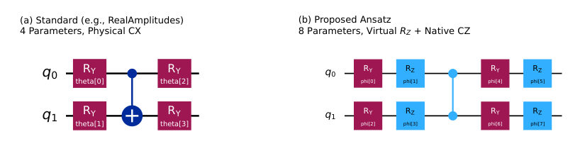
Summary. This work addresses the challenge of preparing complex, smooth quantum states needed for solving PDEs on noisy quantum hardware. The authors propose a novel, shallow quantum circuit utilizing virtual phase rotations to maintain high fidelity. This method proves to be robust against realistic noise, making it a practical tool for quantum simulation algorithms.
Why it may be interesting. It provides a concrete, practical quantum circuit primitive that addresses the critical bottleneck of state preparation fidelity in quantum simulation algorithms for continuous physical systems.
Main problem. Preparing smooth, real-amplitude quantum states is crucial for quantum solvers of dissipative Partial Differential Equations (PDEs).
Main result. The proposed low-depth, virtual-Rz-enabled ansatz achieves high fidelity and significantly outperforms deep exact state preparation methods under realistic NISQ noise.
Method. A hardware-aware variational ansatz using local Ry rotations, a CZ layer, and virtual Rz updates is proposed and optimized using COBYLA.
Model / system. The model involves encoding discretized positive weights from dissipative PDEs (like LCHS) into quantum state amplitudes, requiring the state to be smooth and weakly entangled.
Key observables. Fidelity ($F( heta)$) under ideal, NISQ, and early-FTQC noise conditions.
Important parameters / regimes. Circuit depth ($O(n)$), noise parameters ($p_{2Q}, p_{1Q}$), and the bond dimension of the resulting MPS.
Assumptions / limitations. Virtual Rz operations are assumed to add no physical pulses or duration, and the state is restricted to a low-bond-dimension MPS matching the target smoothness.
Figures summary. Figure 1 illustrates the single-layer ansatz for n=2, showing the structure of Ry and virtually implemented Rz rotations. Table I compares fidelities for n=6 and n=12 across different state preparation methods under various noise regimes.
Paper structure. The paper introduces the problem of state preparation for PDE solvers, proposes the novel low-depth ansatz incorporating virtual Rz, details the theoretical benefits (low-bond-dimension MPS), and benchmarks the method against exact and baseline circuits under increasing noise levels.
Preparing smooth real-amplitude quantum states is a key subroutine in quantum solvers for dissipative PDEs, such as LCHS, where discretized positive weights must be encoded into amplitudes. Exact state-preparation decompositions can reach unit fidelity ideally, but their two-qubit depth grows quickly and causes severe fidelity loss on NISQ hardware. We propose a low-depth, hardware-aware variational ansatz tailored to smooth, weakly entangled, near-real target distributions typical of damped PDE dynamics. The circuit uses one layer of local Ry rotations to generate real amplitudes, a nearest-neighbor CZ entangling layer to introduce limited entanglement, and additional Rz rotations implemented virtually as frame updates. Virtual Rz operations add no physical pulses and do not increase circuit duration, providing extra degrees of freedom without enlarging the gate footprint; in simulation they are treated as ideal to isolate their benefit. From a tensor-network viewpoint, the alternating structure restricts the state to a low-bond-dimension MPS, matching the target smoothness (for 3 qubits, bond dimension <= 2). We optimize parameters with COBYLA to minimize infidelity and benchmark against exact state preparation (Qiskit) and a RealAmplitudes (CZ) baseline. Under depolarizing noise representative of NISQ and early fault-tolerant regimes, the proposed single-layer circuit achieves high ideal fidelity with O(n) depth and substantially higher noisy fidelity than deeper exact constructions. In coherent-noise sweeps, virtual Rz parameters absorb systematic phase errors and axis mismatch, maintaining near-unity fidelity over a wide error range. These results indicate that virtual-Rz-enabled, low-depth circuits provide a practical, noise-resilient state-preparation primitive for PDE solvers on NISQ and early FTQC hardware.
Authors: Sauri Bhattacharyya, Bernard van Heck
Type: theory · Category: quantum information and computing · PDF: https://arxiv.org/pdf/2608.18042v1
Analysis basis: full PDF text, analyzed in chunks
Topic relevance: Keldysh / 2PI / non-Gaussian methods 1/5 · correlated / nonlocal dissipation 1/5 · driven-dissipative phase transition 1/5 · methods for driven-dissipative 1/5 · quantum measurements 1/5
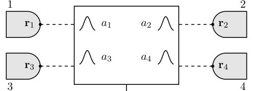
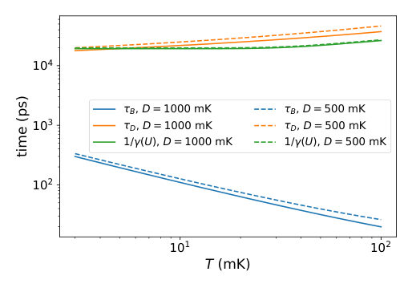
Summary. This theoretical paper analyzes how Majorana tetron qubits lose quantum information due to coupling with external quasiparticles. Using the Bloch-Redfield equation, the authors derive key rates for decoherence and parity leakage. The results are crucial for understanding and improving the time-domain measurements of Majorana qubits in quantum computing prototypes.
Why it may be interesting. This work directly addresses decoherence mechanisms in solid-state qubits, providing quantitative tools to predict experimental limitations in topological quantum computing platforms.
Main problem. The paper investigates the dissipative dynamics of a Majorana tetron qubit when subjected to environmental noise from quasiparticle poisoning.
Main result. The analysis yields analytical expressions for the steady state, parity leakage, and decoherence rates, showing how the dephasing rate's exponential suppression is gradually removed by the qubit's energy splitting.
Method. The study employs the Bloch-Redfield equation, derived using the Born-Markov approximation, to model the open quantum system dynamics.
Model / system. The system is a Majorana tetron qubit, modeled as a superconducting island hosting four Majorana zero modes, coupled to external leads (the bath). The dynamics are governed by a master equation derived from the total Hamiltonian.
Key observables. Steady state, parity leakage rate, and decoherence rate of the Majorana qubit.
Important parameters / regimes. Charging energy (U), direct couplings ($\epsilon$), and coupling strength ($\Gamma_0$). Key regimes include the degenerate ($\epsilon \ll \Gamma_0$) and secular ($\epsilon \gg \Gamma_0$) limits.
Assumptions / limitations. The Born-Markov approximation is used, requiring the bath correlation time to be much shorter than the system evolution time ($ au_D \gg au_B$).
Figures summary. Figure 1 schematically shows the tetron island coupled to four fermionic leads, and Figure 2 illustrates the energy-level scheme of the isolated Majorana system.
Paper structure. The paper progresses from defining the full Hamiltonian and the open system dynamics via the Bloch-Redfield equation, deriving the master equation under approximations, and finally analyzing the resulting rates in different energy regimes.
We study the dissipative dynamics of a Majorana tetron qubit in the presence of extrinsic quasiparticle poisoning due to the coupling to external leads. From the Bloch-Redfield equation describing a finite-size topological superconductor hosting four Majorana zero modes, we recover analytical expressions for the steady state, the parity leakage rate, and the decoherence rate of a Majorana qubit at arbitrary values of the charging energy. The analysis shows that the exponential suppression of the dephasing rate is gradually removed by the energy splitting of the qubit states. These results can be useful to understand time-domain experimental data in Majorana qubit prototypes.
Authors: Xingyu Zhang, Weijia Guo, Jinke Yu, Qingyong Meng
Type: theory · Category: other · PDF: https://arxiv.org/pdf/2608.17261v1
Analysis basis: full PDF text, analyzed in chunks
Topic relevance: Keldysh / 2PI / non-Gaussian methods 1/5 · analog quantum simulation 1/5 · methods for driven-dissipative 1/5 · quantum measurements 1/5
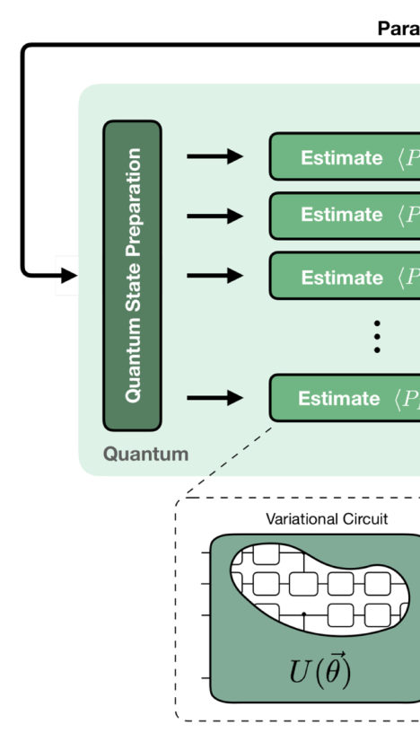
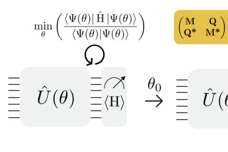
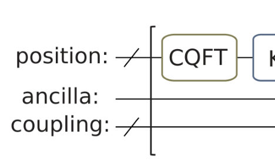
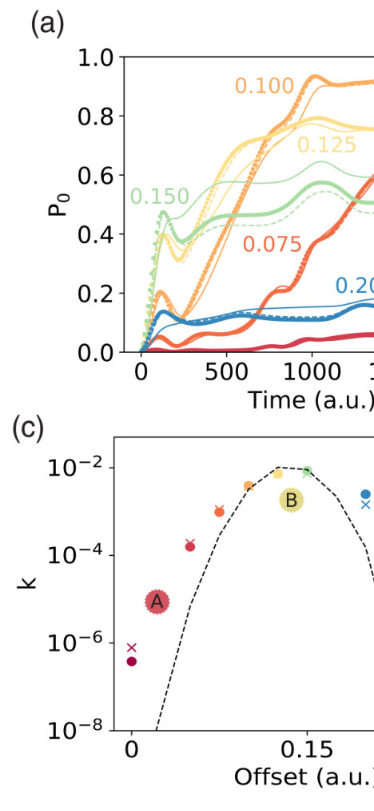
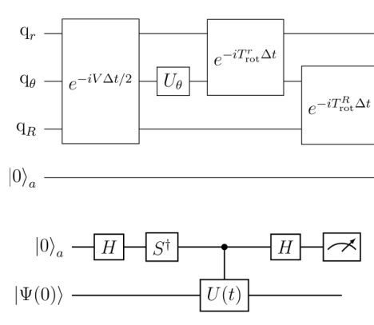
Summary. This paper investigates the theoretical possibility of using quantum simulation for quantum molecular dynamics, particularly for chemical reactions. It critically analyzes underlying mathematical requirements, focusing on issues like the conjugacy between systems and the implications of real-valued quantum mechanics. The work provides a theoretical roadmap for advancing quantum simulation in chemistry.
Why it may be interesting. This work directly addresses the theoretical limits and necessary mathematical foundations for applying quantum computation to simulate fundamental processes in molecular physics and chemical dynamics.
Main problem. The paper explores the theoretical feasibility of using quantum simulation techniques to model complex quantum molecular dynamics, especially for chemical reaction processes.
Main result. The authors analyze fundamental theoretical hurdles, such as the conjugacy relation between dynamical systems, the transition to real-valued quantum mechanics, and the emergence of geometric phases from degrees of freedom separation.
Method. The analysis reviews existing quantum-classical mixed simulation implementations and focuses on theoretical constraints by examining the mathematical requirements for simulating time evolution.
Model / system. The focus is on quantum many-body systems undergoing molecular reaction dynamics. The theoretical framework involves comparing the target molecular system's dynamics with the dynamics implemented on a quantum simulator.
Key observables. Population fractions ($P_0$), rate constants ($k$), and the general time evolution of the quantum state.
Important parameters / regimes. The separation of degrees of freedom (DOFs) and the resulting geometric phase ambiguity are key theoretical parameters.
Assumptions / limitations. The paper assumes the necessity of a conjugacy relation for successful simulation and discusses the theoretical implications of using real-valued quantum mechanics instead of complex Hilbert spaces.
Figures summary. Figures illustrate various quantum algorithms (VQE, qEOM) and model results, such as the time evolution of the Marcus spin-boson model showing charge transfer regimes.
Paper structure. The paper is structured theoretically, analyzing four key aspects (conjugacy, wave function correspondence, real-valued issues, geometric phase) by reviewing existing quantum-classical mixed implementations.
In this work, we explore the implementation possibility of quantum simulation for quantum molecular dynamics, in particular for reaction dynamics, though several implementations have already reported through quantum-classical mixed simulations ({\it Acc. Chem. Res.} {\bf 54} (2021), 4229 and {\it J. Phys. Chem. Lett.} {\bf xx} (2026), XXXX). To analyze this aspect, we examine (1) the conjugacy relation between quantum simulator and the target molecular system, (2) the wave function correspondence in quantum algorithm and classical algorithm for multi-dimensional dynamics, (3) problems arisen from real-valued classical algorithms, and finally (4) geometric phase arisen from the separation among the degrees of freedom (DOFs). As is well known, the aforementioned first and second points play fundamental roles in quantum simulation of quantum many-body systems, and the third and fourth points are theoretical issues that might introduce problems in classical and quantum computing. In this work, we mainly focus on the third and fourth points by analysis of the first two points by reviewing previously reported quantum-classical mixed implementations of quantum simulation. We also consider gauge freedom in high-dimensional quantum molecular dynamics that has been introduced recently, and then discuss possibility of advantages and disadvantages of quantum simulation for molecular reaction dynamics.
Authors: Shunsuke Sengoku, Haruki Watanabe
Type: theory · Category: statistical mechanics · PDF: https://arxiv.org/pdf/2608.17548v1
Analysis basis: full PDF text, analyzed in chunks
Topic relevance: Frenkel-Kontorova 1/5 · analog quantum simulation 1/5 · scars & prethermalization 1/5
Summary. This theoretical paper proves that a specific class of U(1)-symmetric spin-1 chains lacks nontrivial local conserved quantities. By applying advanced commutator techniques, the authors show that the continuous symmetry breaking observed in these models is structural (due to frustration-free nature) rather than being protected by a conserved order parameter. This provides deep insight into the underlying dynamics and integrability of these quantum spin systems.
Why it may be interesting. Proving the absence of local conserved quantities is a powerful tool for demonstrating non-integrability in quantum many-body systems, which is crucial for understanding thermalization and dynamics in condensed matter models.
Main problem. The paper aims to rigorously prove the absence of nontrivial local conserved quantities in a specific, previously unstudied class of U(1)-symmetric spin-1 chains.
Main result. It establishes that for these models, any local conserved quantity with support up to half the system size must be a simple linear combination of the identity, the total magnetization, and the Hamiltonian itself.
Method. The authors employ Shiraishi's technique, analyzing the commutator $[Q, H]$ for potential conserved charges $Q$ and solving the resulting linear system of equations.
Model / system. The system is a spin-1 chain on a periodic lattice with nearest-neighbor interactions, characterized by dipolar and quadrupolar couplings. The focus is on models where certain quadrupolar couplings vanish, including the frustration-free Motzkin chain.
Key observables. Local conserved quantities ($Q$), the total magnetization ($S_z$), and the Hamiltonian ($H$).
Important parameters / regimes. The size of the system ($N$) and the range of the conserved quantity support ($3 \le k \le N/2$).
Assumptions / limitations. The analysis relies on extending previous techniques to handle vanishing quadrupolar couplings, which was a gap in prior literature.
Paper structure. The paper systematically analyzes the nonexistence of conserved quantities by first examining 2-local, then 3-local, and finally ruling out higher-order local charges using commutator analysis.
We prove the absence of nontrivial local conserved quantities in a class of $U(1)$-symmetric spin-$1$ chains with nearest-neighbor interactions in which some of the quadrupolar couplings vanish, a class that is not covered by previous studies. Applying the technique of Shiraishi to these systems, we show that, for every model in this class on a periodic chain of $N$ sites, there is no $k$-local conserved quantity for any $3\le k\le N/2$. In particular, for a frustration-free spin-$1$ chain that exhibits spontaneous $U(1)$ symmetry breaking at zero temperature in one spatial dimension, we prove that every local conserved quantity with support up to half of the system size is a linear combination of the identity, the total magnetization $S^z$, and the Hamiltonian itself. This rigorously establishes that, unlike the Heisenberg ferromagnet, the model admits no local order parameter commuting with the Hamiltonian, so that its continuous symmetry breaking is enabled by the frustration-free structure rather than by a conserved order parameter. We also prove the absence of $k$-local conserved quantities for $3\le k\le N/2$ in the periodic Motzkin chain, a frustration-free spin-$1$ chain closely related to the original Motzkin chain, for which spontaneous $U(1)$ symmetry breaking at zero temperature has also been reported.
Authors: Weitao Chen, Yunxiang Liao
Type: theory · Category: disordered systems and neural networks · PDF: https://arxiv.org/pdf/2608.17649v1
Analysis basis: full PDF text, analyzed in chunks
Topic relevance: Keldysh / 2PI / non-Gaussian methods 1/5 · analog quantum simulation 1/5 · non-equilibrium universality 1/5
Summary. This work rigorously analyzes the spectral properties of a singular quantum kicked rotor by mapping it onto a nonlinear sigma model. Using advanced renormalization group techniques, the authors demonstrate that the rotor's dynamics fall into the same universality class as power-law random banded matrices. This resolves a key theoretical question regarding the relevance of deterministic correlations in the context of Anderson localization.
Why it may be interesting. The connection between deterministic, structured quantum dynamics (the rotor) and the universality class of random matrix theory (PRBM) provides deep insights into the role of correlations in localization phenomena, relevant for understanding disordered quantum systems.
Main problem. The paper investigates whether the deterministic correlations of a singular quantum kicked rotor become irrelevant at long distances, determining if it shares the same infrared theory as power-law random banded matrices (PRBM).
Main result. The rotor successfully reproduces the long-range Anderson transition of the corresponding PRBM in the localized and critical regimes after appropriate matching of symmetry and coupling conventions.
Method. The authors derive a nonlocal supersymmetric nonlinear sigma model from the rotor and perform a detailed renormalization-group (RG) analysis up to two-loop order.
Model / system. The system is a singular quantum kicked rotor, whose dynamics are governed by a Floquet operator. It is mathematically compared to PRBM, which are characterized by algebraically decaying momentum-space matrix elements.
Key observables. Inverse participation ratios (IPR), two-level quasienergy correlator, and the analysis of localization/critical/extended infrared regimes.
Important parameters / regimes. The singularity type (power-law or logarithmic), the RG flow parameters (stiffness $t$, local moment renormalization $Z_p$), and the symmetry class.
Assumptions / limitations. The analysis requires matching the symmetry class, coupling convention, and asymptotic scaling window between the rotor and the PRBM.
Figures summary. Not specified.
Paper structure. The paper proceeds by deriving the sigma model, performing RG analysis on correlation functions (like the two-level correlator), and analyzing the flow equations for key parameters like stiffness and local moment renormalization.
Singular kicked rotors have long been compared with power-law random banded matrices (PRBM) because their momentum-space Floquet matrix elements decay algebraically. However, it has remained unclear whether the deterministic correlations of the rotor become irrelevant at long distances and, consequently, under what conditions the two systems share the same infrared theory. To address this question, we derive a nonlocal supersymmetric nonlinear sigma model directly from a quantum kicked rotor with a power-law or logarithmic singularity. By carrying out the renormalization-group analysis up to two-loop order, we show that, after matching the symmetry class and coupling convention, the rotor reproduces the long-range Anderson transition of the corresponding PRBM, including its localized, critical, and extended infrared regimes.
Authors: Zhenhai Hu, You-Sheng Li, Aleksei V. Frolov, Fabian Jerzembeck, Manuel Brando, Naoki Kikugawa, Dmitry A. Sokolov, Hilary M. L. Noad, Andrew P. Mackenzie, Michael Nicklas, Andreas W. Rost
Type: both · Category: strongly correlated electrons · PDF: https://arxiv.org/pdf/2608.17777v1
Analysis basis: full PDF text, analyzed in chunks
Topic relevance: Keldysh / 2PI / non-Gaussian methods 1/5 · quantum measurements 1/5
Summary. This work introduces a novel method using the a.c. elastocaloric effect to map the absolute entropy and specific heat of quantum materials like $ ext{Sr}_2 ext{RuO}_4$ under uniaxial strain. By combining low- and high-frequency measurements, the authors overcome limitations of traditional probes. The results provide quantitative evidence regarding entropy changes across superconducting and magnetic phase transitions in correlated electron systems.
Why it may be interesting. The ability to probe absolute thermodynamic quantities like entropy and specific heat deep within the superconducting state using strain-induced effects provides a powerful, non-invasive tool for characterizing strongly correlated electron systems.
Main problem. To develop a quantitative framework to reconstruct absolute entropy and specific heat across complex phase diagrams of quantum materials under uniaxial pressure, overcoming limitations of conventional thermodynamic probes.
Main result. The method successfully maps the absolute entropy and specific heat for $ ext{Sr}_2 ext{RuO}_4$, showing that entropy quenching is strongest at the critical strain corresponding to the Van Hove singularity.
Method. The analysis combines measurements from the low-frequency (strong coupling) and high-frequency (quasi-adiabatic) regimes of the a.c. elastocaloric effect to achieve absolute accuracy in entropy reconstruction.
Model / system. The study focuses on the correlated superconductor $ ext{Sr}_2 ext{RuO}_4$ subjected to uniaxial strain. The theoretical framework uses the entropy balance equation to relate heat flow from an external heater to the elastocaloric response.
Key observables. Absolute entropy map, specific heat ($c/T$), and the temperature oscillation amplitude ($ ilde{T}_s$) as a function of strain and frequency.
Important parameters / regimes. Uniaxial strain ($\varepsilon$), temperature ($T$), and measurement frequency ($\omega$), with characteristic time scales set by $ au_1 = C_{ ext{tot}}/k$.
Assumptions / limitations. The reconstruction relies on combining data from two distinct frequency regimes (low vs. high) and treating the elastocaloric response as an effective heat source in the thermodynamic balance equation.
Figures summary. Figures illustrate the phase diagram of $ ext{Sr}_2 ext{RuO}_4$ under strain, the experimental setup, and plots comparing the normalized temperature oscillation signal ($ ilde{T}_s$) across different frequencies.
Paper structure. The paper develops the theoretical framework by deriving the governing differential equation unifying heating and elastocaloric effects. It then applies this framework to $ ext{Sr}_2 ext{RuO}_4$ to map the entropy and specific heat across its superconducting and magnetic phase boundaries.
Uniaxial pressure is a powerful tuning parameter for quantum materials, but conventional thermodynamic probes such as specific heat are difficult to realize in the constrained geometries of strain apparatus. We develop a quantitative analysis framework for a.c. elastocaloric effect measurements that enable the reconstruction of the absolute entropy and hence specific heat across complex phase diagrams. The absolute accuracy is achieved by combining measurements in the strong coupling regime at low frequencies with high signal-to-noise measurements in the quasi-adiabatic regime at high frequencies. Applying the approach to the correlated superconductor Sr$_2$RuO$_4$, we obtain an absolute entropy map across the phase diagram including across phase transitions deep into the superconducting state. We demonstrate that from such data one can derive the absolute specific heat which is currently not possible through other approaches. This data reinforces the finding that the quenching of entropy within the superconductor Sr$_2$RuO$_4$ is strongest at the critical strain consistent with the superconducting gap being maximized at the Van Hove singularity (VHs). Furthermore, we demonstrate that, although $Δc /(γT) $ does increase at the VH strain, this increase is much weaker than previously inferred from more indirect caloric experiments.
Authors: Hongru Zhao
Type: theory · Category: quantum information and computing · PDF: https://arxiv.org/pdf/2608.17274v1
Analysis basis: full PDF text, analyzed in chunks
Topic relevance: analog quantum simulation 1/5 · interference shaping light 1/5
Summary. This paper rigorously proves the weak typicality of entanglement entropy in Gaussian Boson Sampling models. It shows that the measured entropy is highly concentrated around its expected value, establishing a quantitative concentration bound. This result is significant for understanding the typical scaling laws governing entanglement in large-scale quantum optical devices.
Why it may be interesting. This work provides rigorous mathematical tools for analyzing entanglement measures in complex quantum optical circuits, which is crucial for understanding the resource scaling and fundamental limits of photonic quantum computation.
Main problem. The paper investigates the weak typicality of the von Neumann entanglement entropy generated by a Haar distributed passive interferometer acting on squeezed input modes.
Main result. It proves that the ratio of the entanglement entropy to its expectation value converges in probability to 1, establishing proportional weak typicality for this specific Gaussian Boson Sampling setup.
Method. The proof involves representing the entropy as a singular value statistic of a principal block of the interferometer's unitary matrix and applying concentration inequalities on the unitary group.
Model / system. The system is Gaussian Boson Sampling (GBS) using an ideal, lossless interferometer acting on $n$ equally squeezed input modes. The evolution is governed by a Haar distributed unitary $U$.
Key observables. Von Neumann entanglement entropy ($S_{1,n}$), the ratio $S_{1,n} / \mathbb{E}S_{1,n}$, and the variance $ ext{Var}(S_{1,n})$.
Important parameters / regimes. Fixed nonzero squeezing strength ($s$), and a proportional bipartition ratio ($k_n/n o r \in (0, 1)$).
Assumptions / limitations. The result assumes fixed equal squeezing and a proportional bipartition; it does not cover unequal squeezing or vanishing squeezing.
Figures summary. Figure 1 illustrates the proof pipeline, connecting the unitary $U$ to its principal block $B_U$ and the singular values used in the entropy calculation.
Paper structure. The paper establishes the mathematical framework by relating the entropy to singular values, proves the weak typicality bound using concentration on the unitary group, and concludes by deriving the implications for convergence and variance.
We study the von Neumann entanglement entropy generated by a Haar distributed passive interferometer acting on $n$ equally squeezed input modes with fixed nonzero squeezing strength $s$. Previous work established proportional weak typicality for integer R'enyi orders $α\geq 2$ and stated a sublinear von Neumann result, while the proportional von Neumann case remained open. For a subsystem of $k_n$ modes satisfying $k_n/n\to r\in(0,1)$, we prove that, for every $\varepsilon>0$ and all sufficiently large $n$, $\mathbb{P}\left(\left|\frac{S_{1,n}}{\mathbb{E}S_{1,n}}-1\right|\geq\varepsilon\right)\leq2\exp\left[-\frac{c_{s,r}\varepsilon^2n^2}{\log^2(en)}\right].$ The proof represents the entropy as a singular value statistic of a principal block of $UU^{\mathsf T}$, where $U$ denotes the unitary interferometer. It regularizes the logarithmic singularity at the endpoint corresponding to a pure Gaussian mode and applies concentration on the unitary group. The result establishes proportional von Neumann weak typicality and further implies almost sure convergence of $S_{1,n}/\mathbb{E}S_{1,n}$ to $1$, a typical volume law, and the variance bound $\mathrm{Var}(S_{1,n})=O_s(\log^2 n)$. An accompanying Lean 4 development verifies the proof chain.
← Index · ← Previous · Next →